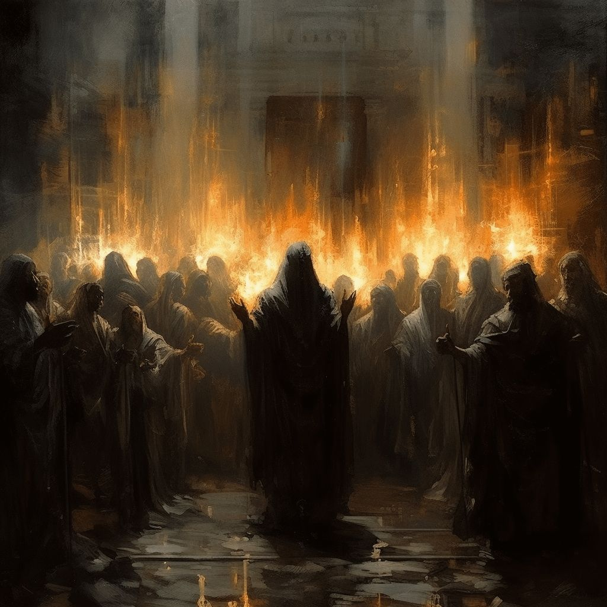

Welcome to THE NARROW GATE blog

This space is dedicated to sharing thoughts, Encouragement, and packets of light from the scriptures to become more Christ Like And to also preach the True Gospel of Christ which brings transformation.

This space is dedicated to sharing thoughts, Encouragement, and packets of light from the scriptures to become more Christ Like And to also preach the True Gospel of Christ which brings transformation.